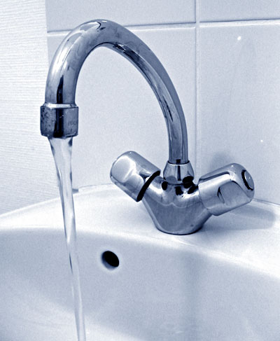
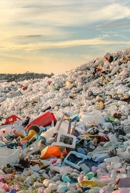
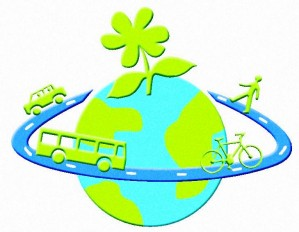
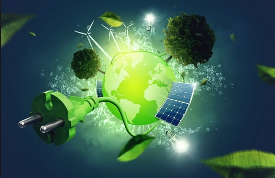
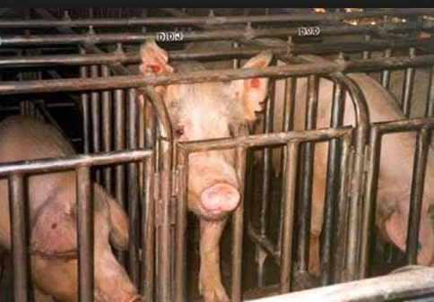
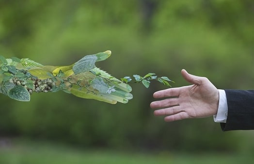

Les gestes à faire pour protéger l’environnement
Si tout le monde faisait des petits gestes écologiques chez soi au quotidien cela contribuerai à la protection de l’environnement. Nous vivons tous sur cette planète et c'est grâce à elle que nous pouvons survivre c'est pourquoi il est vital de maintenir notre écosystème. Si nous ne changeons pas les choses, nous irons tout droit vers l'extinction de la race humaine. Il est donc dans notre devoir de protéger la planète !
Nous allons donc vous présenter quelques conseils que vous pourrez appliquer dès à présent. Faites ces quelques gestes quotidiens et vous sauverez les ressources de notre planète, des espèces animales en danger et bien sûr notre environnement.
Réduire le gâchis d'eau
Pourquoi faut-il économiser l'eau ?
Savez-vous que sur les 72% d'eau qui composent la planète, il y a seulement 2.8% d'eau douce ?
Et que 2.1% de cette eau douce provient des calottes polaires ?
Il n'y a donc que 0.7% d'eau douce accessible à l'être humain... Or de nos jours, nous sommes 7.5 milliards d'habitants sur Terre et ce chiffre ne cesse d'augmenter.
Malgré cela, le gaspillage d'eau ne cesse pas, par exemple en France 1 litre sur 5 d'eau est perdu à cause des fuites dans les conduits d'eau.
Malheureusement les moyens financiers ne sont pas assez élevés puisqu'ils ne peuvent remplacer que 0.6% des canalisations par an.
Afin de limiter les pertes d'eau, il faut agir au quotidien à son niveau!
Voici 5 conseils que vous pouvez suivre :

- Fermez le robinet lorsque vous vous brossez les dents ou que vous vous lavez les mains, cela peut sembler logique mais il y a encore beaucoup de personnes qui ne le font pas...
- Avoir une carafe d’eau plutôt que d’acheter des bouteilles d’eau car leur production nécessite des heures de transport et crée des tas de déchets
- Préférez une douche brève plutôt qu’un bain (en moyenne un bain nécessite 150 à 200 litres d’eau alors qu’une douche 30 à 80L )
- Choisissez les programmes à moins de 60°C des lave-linge et lave-vaisselle qui suffisent amplement (à 40°C 70% d'énergie est économisée par rapport à 90°C)
- Récupérez l'eau de pluie, vous pourrez l'utiliser pour arroser les plantes ou pour la chasse d'eau
Réduire sa quantité de déchets

En France en moyenne une personne produit 400 kilos de déchets par an soit presque 1 kilo de déchets par jour. Au total il y a plus de 800 millions de tonnes d’ordures qui sont jetées chaque année. Nous achetons de plus en plus d’objets, d’aliments, de produits, que nous jetons ensuite et qui mettent du temps à se décomposer.
Par exemple un chewing-gum met 5 ans pour se décomposer, un sac en plastique 500 ans, le verre 5000 ans et 1 pile 8000 ans ! C’est pourquoi les décharges sont pleines et des tas d’objets se retrouvent dans la nature. Cela pollue l’air que nous respirons ce qui peut engendrer de nombreuses maladies.

En outre de nombreux animaux sont victimes de nos déchets comme par exemple les tortues et les dauphins qui avalent les sachets plastiques qui se trouvent dans l'océan en pensant que c'est des méduses! Cela provoque une occlusion intestinale qui fait souffrir l'animal qui va ensuite mourir de faim...
Voici 8 conseils que vous pouvez suivre :
- Recyclez vos déchets afin de lutter contre le gaspillage des ressources naturelles
- Evitez d'acheter des produits qui ont beaucoup d'emballages plastiques
- Optez pour des produits réutilisables plutôt que jetables
- Utilisez moins de papier (opter pour les services en ligne plutôt que par courrier, imprimer seulement si nécessaire et recto-verso etc...)
- Compostez les déchets de cuisine (actuellement les déchets de cuisine représentent en moyenne 45 kg/habitant par an)
- Ne versez surtout pas de produits dans les cours d’eau, s’ils sont toxiques cela peut causer la mort de milliers d’animaux
- Donnez vos objets afin de leur offrir une seconde vie plutôt que de les jeter, il existe de nombreux conteneurs de collecte où vous pouvez ramener vos objets en toute simplicité
- Ne jetez pas d'appareils électroniques dans la poubelle, ni les médicaments, ni les piles ou tout autre produit toxique
Retour en haut de la page
Priviligier l'éco-mobilité
Pourquoi faut-il se mettre à l'éco-mobilité ?
Le secteur des transports, plus particulièrement le transport routier a un très grand impact sur la pollution atmosphérique.
En effet, les pots d'echappement sont à l'origine d'environ 25% des gaz à effet de serre.
Les voitures consomment 4 fois plus de carburant en ville que sur autoroutes à cause des arrêts et redémarrages incessants c'est pourquoi une voiture individuelle (à Paris) est responsable de l'émission de 2.6 millions de tonnes de CO2.
Pour limiter le rejet de gaz polluants il existe des alternatives à la voiture comme par exemple le vélo, la marche-à-pieds, l'autocar ou encore le train. Malgré cela en France il y a toujours 82% des trajets qui s'effectuent en voiture.
Si vous voulez réduire la pollution due aux transports et ainsi sauvez notre planète, pratiquez l'éco-mobilité !
Voici 5 conseils que vous pouvez suivre :

- Si vous devez faire un trajet de courte distance (inférieur à 3km) priviliegez la marche-à-pieds ou le vélo (la voiture rejette 220kg de C02 par an pour un trajet de ce type)
- Optez pour le train plutôt que l'avion si vous devez faire des distances inférieures à 800km car un avion consomme 6 fois plus d'énergie que le train (sur un trajet de 500km aller-retour l'avion émet jusqu'à de 240kg de C02 par passager contre 3.2kg pour le TGV )
- Pratiquez le covoiturage afin de diminuer le nombre de voitures sur la route, cela permet de réduire le rejet de CO2
- Optez pour les transports en communs en ville, ils sont parfois plus rapides que les voitures car des trajets sont spécialement conçus pour desservir plus facilement les arrêts, de plus il n'y aura pas de stress pour trouver une place de parking
- Entretenez votre véhicule afin de ne pas augmenter votre consommation
Réduire son utilisation d'énergie

Ce n'est pas seulement pour une question d'argent qu'il faut économiser l'énergie mais également question de ressources. En effet, en Europe les centrales électriques (nucléaires et thermiques) produisent trois quarts de l'électricité.
Or elles utilisent des énergies non-renouvelables, l'uranium pour les centrales nucléaires et le charbon, le fioul et le gaz pour les centrales thermiques. La combustion de ces énergies produisent également du C02 car elles sont riches en gaz ce qui augmente considérablement l'effet de serre.
De plus ces énergies s'épuisent de plus en plus c'est pourquoi il faut trouver d'autres alternatives (les énergies renouvelables) pour produire de l'électricité. Remplacer toutes les centrales électriques par des centrales utilisant les énergies renouvelables mets du temps.
C'est pourquoi il est important d'économiser l'énergie que nous utilisons.
Voici 6 conseils que vous pourrez appliquer:
- Eteignez les lumières et tous les appareils qui sont allumés en quittant une pièce
- Utilisez des ampoules basse consommation (elles nécessitent 4 fois moins d'énergie que les ampoules basiques)
- Priviligiez les appareils avec un label énergétique "A"
- Ne laissez pas les appareils en veille (ils peuvent consommer jusqu'à 10% d'électricité en plus)
- Réglez votre chauffage sur des températures plus basses (par exemple 19/20°C suffisent largement) et l'éteindre en cas d'absence
- Faites dégivrer régulièrement votre réfrigérateur ou congélateur
Surveiller son alimentation
Afin de satisfaire nos besoins de plus en plus exigeants, de nombreux pesticides sont utilisés pour l'agriculture intensive ainsi que des engrais chimiques pour stimuler la fertilité des sols. Ils sont composés d'éléments toxiques qui peuvent engendrer de nombreux problèmes de santé.
De plus ils polluent l'air, les sols et l'eau ce qui nuit à la préservation de notre écosystème. En outre, notre consommation de viande atteint plus de 90kg/an, elle a triplée depuis la génération de nos arrière-grands-parents.
Puisque la demande augmente, les animaux des élevages passent une vie de plus en plus courte, reçoivent de grandes doses d'hormones de croissance puis sont abattus.

En France il y a 83% des poulets qui sont élevés sans jamais voir la lumière du jour et la plupart des cochons sont enfermés dans des élevages intensifs. Produire la viande demande beaucoup d'eau par exemple pour faire 1kg de boeuf il faut 15500 litres d'eau et pour nourrir les animaux c'est 70% des terres agricoles qui sont utilisées.
C'est pourquoi plusieurs millions d'hectares sont déboisés dans le monde afin de créer des pâturages. La production de viande et de l'agriculture sont donc à l'origine de la maltraitance animale, de la déforestation et de la pollution de l'environnement. C'est pourquoi il est nécessaire d'adapter son alimentation de façon saine.
Voici 5 conseils que vous pouvez suivre :
- Consommez des produits locaux et qui sont de saison afin d'éviter des heures de transport et encourager les producteurs de notre région
- Consommez moins de viande (2/3 fois par semaine est suffisant)
- Consommez du poisson non sur-exploité
- Remplacez le lait de vache par du lait végétal (car les vaches sont inséminées toute leur vie afin de produire du lait en continu et les veaux leur sont retirés à la naissance)
- Ne consommez pas des aliments contenant de l'huile de palme (le palmier qui l'a produit ne pousse qu'à la zone équatoriale, afin de le faire pousser des milliers d'hectares de végétations sont brulées ce qui détruit l'habitat de nombreux animaux
CONCLUSION : PROTEGER NOTRE PLANETE !
